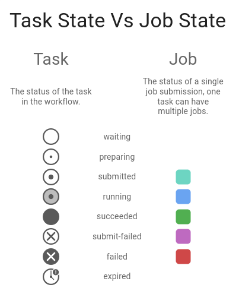

Summary Of Major Changes
Terminology
Cylc now uses more widely understood terms for several core concepts.
Cylc 7 Term |
Cylc 8 Term |
|---|---|
suite |
workflow |
batch system |
job runner |
suite daemon |
scheduler |
|
|
Note the configuration filename is now flow.cylc, not suite.rc.
Cylc 7 Compatibility Mode
Continuing to use the old suite.rc filename triggers a backward
compatibility mode in Cylc 8 which supports Cylc 7
workflow configurations out of the box, with
some caveats. However, to future-proof
your workflow and take full advantage of Cylc 8 you should upgrade to Cylc 8 syntax.
Upgrading To Cylc 8
See also
Major Changes: Configuration Changes at Cylc 8
Major Changes: Cylc 7 Compatibility Mode
There have been some configuration changes at Cylc 8.
To upgrade your Cylc 7 suite to a Cylc 8 workflow, first make sure it validates
in Cylc 7 without any warnings, then rename the workflow configuration file
from suite.rc to flow.cylc, then run cylc validate in Cylc 8 and
take action on any warnings.
Note
Validation warnings use a shorthand notation
to refer to nested configuration settings on a single line, like this:
[section][sub-section]item.
New Web and Terminal UIs
See also
Major Changes: Cylc 8 UIs
At Cylc 8, there are two UIs available to monitor and control your workflows:
a terminal UI application
cylc tuia web based UI application (requires Cylc UI Server)
cylc gui
Command Changes
cylc run <suite_name> at Cylc 7 has become cylc play <workflow_id>.
See also
User Guide: Start, Restart, Reload
Major Changes: Play Pause Stop
Major Changes: Command Line Interface
At Cylc 8, use cylc pause <workflow_id> to pause a workflow, halting all job
submission. To restart the workflow, use cylc play <workflow_id>.
To start a fresh run, use cylc install and play it safely in the new run
directory.
(Note that cylc hold and cylc release pause and release individual tasks.)
Task/Job States
Tasks are nodes in the abstract workflow graph, representing applications to run at the appropriate point in the workflow. A job is the script (and subsequent process) submitted by Cylc to actually run the application. A task can have multiple jobs as the result of automatic retries or manual re-triggering.
The 13 task/job states in Cylc 7 have been simplified to 8. Tasks and jobs have been separated and states of both can be viewed in the GUI.
For more information, see Task/Job States.
Optional and Required Task Outputs
See also
Major Changes:Graph branching, optional outputs and suicide triggers
User Guide:Required Outputs
User Guide:Optional Outputs
By default, all Cylc 8 tasks are required to succeed - i.e., success is a required output. Tasks with final status and incomplete outputs get retained in the n=0 window pending user intervention, which will stall the workflow.
Alternatively, outputs can be marked as optional, which allows optional graph branching.
This allows the scheduler to correctly diagnose workflow completion.
Platform Awareness
See also
Cylc 7 was aware of individual job hosts - one selected a host using:
[runtime][<namespace>][remote]host.
Cylc 8 is aware of sets of host settings called
[job] platforms. To choose a platform for a task use
[runtime][<namespace>]platform
Hosts of a platform must share a file system and job runner: If one host is unavailable Cylc 8 can use other hosts on the same platform to interact with jobs.
The same hosts can belong to multiple platforms, for example you might be able to use the same host to launch both background and Slurm jobs.
Note
Cylc 8 will pick a sensible platform for your Cylc 7 settings, These deprecated settings will be removed in a future release.
Workflow Installation
Cylc 8 supports workflow installation.
For users of Rose, this replaces the functionality of rose suite-run.
Cylc Install
See also
Major Changes: Moving to Cylc Install
Cylc install cleanly separates workflow source directory from
run directory. It installs workflow files ready for cylc play.
$ pwd
~/cylc-src/demo
$ ls
flow.cylc
$ cylc install
INSTALLED demo/run1 from /home/oliverh/cylc-src/demo
$ cylc play demo
...
demo/run1: oliver.niwa.local PID=6702
By default, run numbers increment with each install.
File Installation
When the first job runs on a remote platform (after start-up, or after a cylc reload), a
remote initialization process is triggered to install workflow files there.
Symlink Dirs
See also
User Guide: Symlink Directories
User Guide: Remote Initialization
Symlinking the workflow directories used by Cylc provides a useful way of managing disk space.
These symlinks are created on a per install target basis, as configured in
global.cylc[install][symlink dirs]. Install targets are managed on
a site level, for more information see What Are Install Targets?
This functionality replaces the Rose root dir configuration
for Cylc 7 (however, note it does not allow per-workflow configuration).
Removing Workflows
Workflows can be deleted with cylc clean - see Removing Workflows. This
replaces the rose suite-clean functionality.
Architecture
There have been fundamental changes to the architecture of Cylc. You can read about the new system design here Architecture.
Scheduling Algorithm
The scheduling algorithm has been changed, more information is available: Scheduling Algorithm.
Other Changes
There are an assortment of other features implemented at Cylc 8. Some noteworthy minor changes include:
- Runahead Limit
The default runahead limit has been increased from three cycles to five.
- Queues
Internal Queues are now more efficient (for the scheduler), we now recommend using queues to restrict the number of running tasks in situations where graphing may have been used previously.
- Time Zones
[scheduler]cycle point time zonenow defaults to UTC, unless you are working in Cylc 7 Compatibility Mode.- Job Scripts
All user-defined task scripting now runs in a subshell, so you can safely switch Python environments inside tasks without affecting Cylc. Further information is available in the User Guide: Job Scripts.
- Packaging
Cylc 8 (and its package dependencies) is now available from Conda Forge and PyPI for installations into a Python 3 virtual environment.
- Remote usernames
If usernames differ on remote job hosts they must now be configured using an SSH config file rather than the via Cylc 7
[remote]ownerconfiguration. See Remote Usernames.